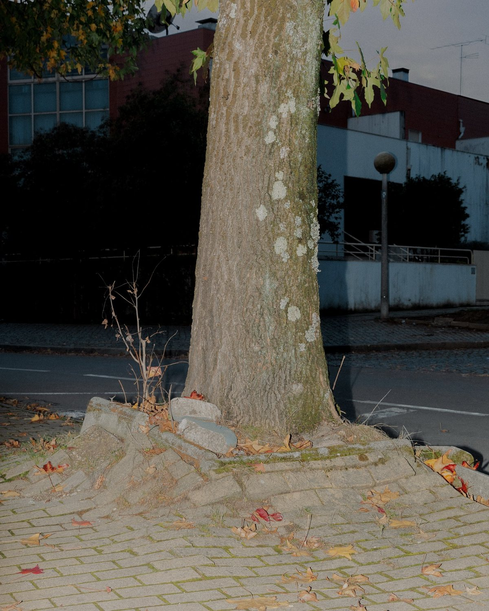
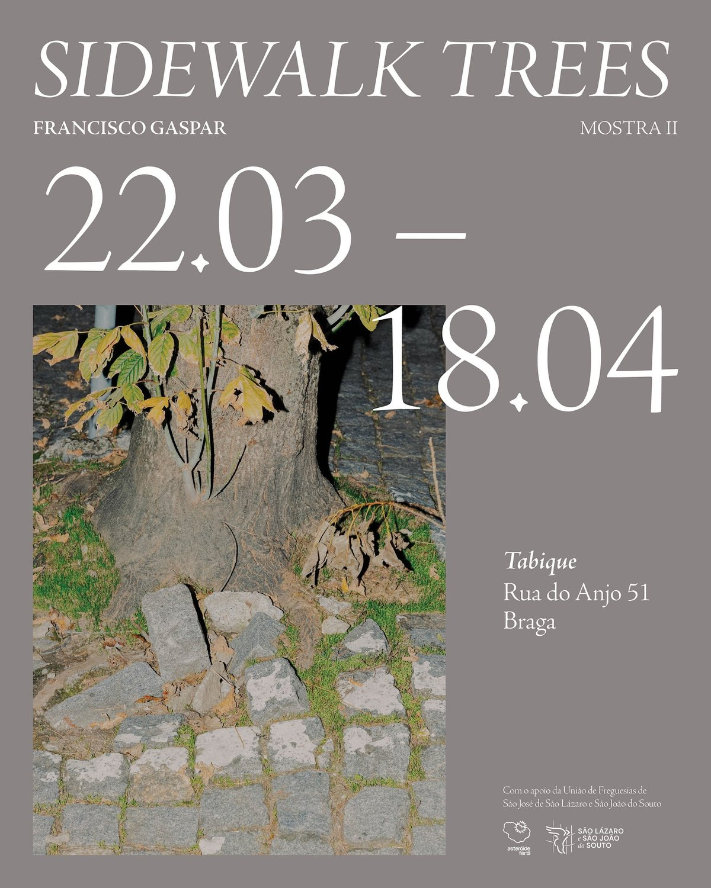

MostraII
As cidades são muitas vezes vistas como símbolos da ambição e do controlo humanos. No entanto, são por natureza temporárias e têm de se adaptar constantemente. Através de cada fotografia, a série Sidewalk Trees explora como os espaços urbanos, aparentemente símbolos de controlo humano, são afinal frágeis e forçados a ceder à mudança orgânica.
Ao documentar estas cenas, destaco a resistência silenciosa da natureza, lembrando que as nossas cidades são transitórias, reativas e, no fundo, não foram construídas para coexistir com a evolução lenta e imprevisível da vida. Termino a série numa árvore sem nada de especial, livre de construções humanas. É a única que escolhi fotografar sob luz natural.

